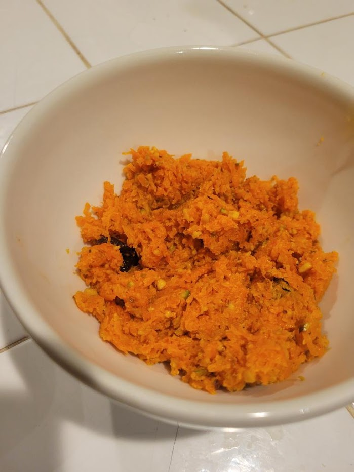

Carrot pudding
Source: based on https://www.indianhealthyrecipes.com/carrot-halwa-recipe-gajar-ka-halwa-recipe/#Gajar_Ka_Halwa_with_Condensed_Milk
Carrot pudding (gajar ka halwa)
Ingredients
- A tiny bit of ghee
- Carrots (choose carrots that look tender, not woody)
- Ground green cardamom
- (Sweetened) condensed milk
- Pistachios and almonds (or some other nuts)
- Raisins
Instructions
Wash and peel the carrots, then shred them. Shredding them finely will take longer but result in a nicer texture. Cook carrots on low heat with ghee, condensed milk, and cardamom until the mixture is soft and any liquid at the bottom has evaporated or incorporated. Shell pistachios, crush them and the almonds finely, and toast them in a pan. Once the carrots are nearly done cooking, mix in the nuts and raisins.